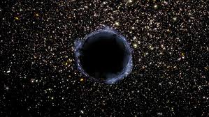

|

Karanlık Enerji Nedir?
Karanlık enerji, evrenin hızlanarak genişlemesine neden olan gizemli bir güçtür. Bilinen hiçbir enerji türüne benzemez ve doğrudan gözlemlenemez.
Ancak evrendeki galaksilerin birbirinden giderek daha hızlı uzaklaştığı gözlemleri, karanlık enerjinin varlığını güçlü biçimde destekler.
Bilim insanları evrenin toplam içeriğini incelediğinde, şaşırtıcı bir sonuç ortaya çıkar: Evrenin yaklaşık %68’i karanlık enerji, %27’si karanlık madde
ve yalnızca %5’i görünür madde (yani yıldızlar, gezegenler, insanlar) oluşturmaktadır. Bu da demektir ki, evrenin büyük kısmı aslında görünmez ve henüz
tam olarak anlaşılamayan bir güç tarafından yönetilmektedir.
Karanlık enerjinin doğası hâlâ bir sırdır. Bazı teorilere göre bu enerji, uzayın kendisinin sahip olduğu vakum enerjisidir; yani evrenin boşluğu aslında
tamamen boş değildir. Diğer teoriler ise karanlık enerjiyi kozmolojik sabit veya uzay-zamanın yapısında bulunan bir tür itici kuvvet olarak açıklar.
Karanlık enerji, evrenin kaderini belirleyecek kadar güçlüdür. Eğer genişleme hızlanmaya devam ederse, milyarlarca yıl sonra galaksiler birbirinden
tamamen kopacak ve evren “soğuk, karanlık ve yalnız” bir hâle gelebilecektir.
Özetle, karanlık enerji evrenin genişlemesini hızlandıran, gizemli ve henüz çözülememiş bir kozmik güçtür. Modern kozmolojinin en büyük bilinmezlerinden
biridir.
|